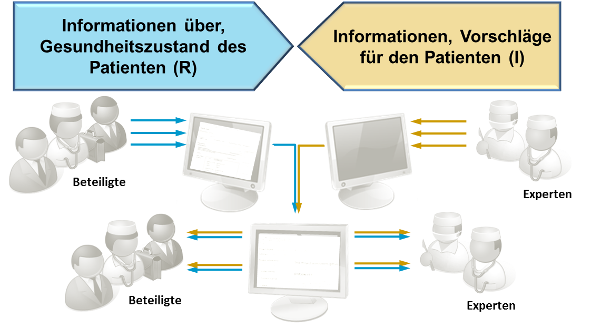

WAS IST DISPEDIA?
Dispedia ist ein Framework zur Informationsvermittlung und zum Wissensmanagement für den komplexen Bereich seltener Erkrankungen. Das Dispedia Framework nutzt semantische Technologien, um einerseits Patienten zu beschreiben, die an einer seltenen Erkrankung leiden und andererseits Expertenwissen zu den speziellen Krankheiten in maschinen-verständlicher Form zu erfassen. Neben der differenzierten Zuordnung der Fakten zu den individuellen Informatoinsbedürfnissen ermöglicht Dispedia eine Informationsvermittlung, die am Typ des Empfängers, seinem Charakter sowie seiner persönlichen Einstellung ausgerichtet ist. Die Beispielerkrankung, an der das Framework anfänglich ausgerichtet war ist die Amyotrophe Lateralsclerose (ALS).